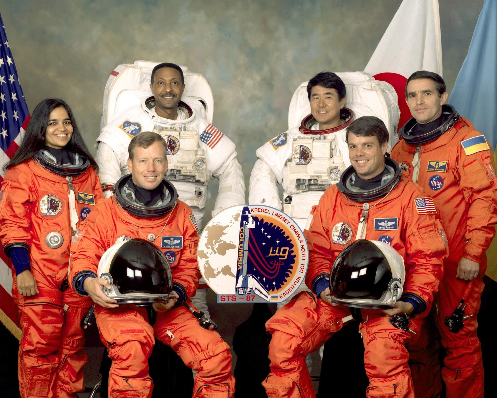
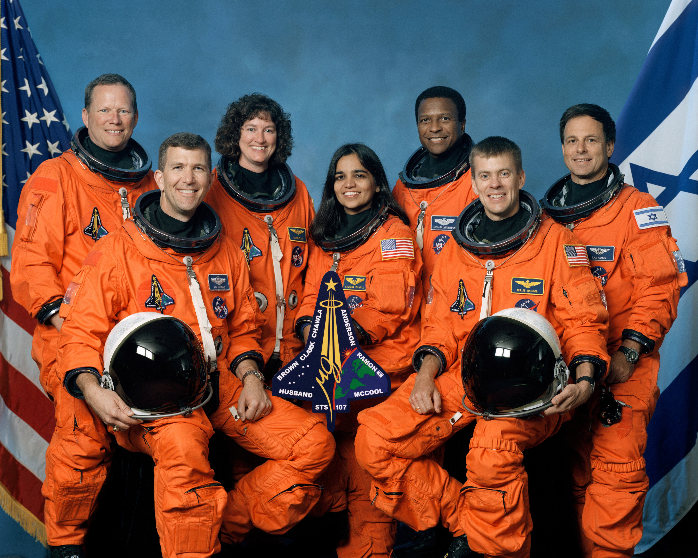

The Path From Dreams To Success Does Exist !
Early Life and Education
Kalpana Chawla was born on 17 March 1962 in a Punjabi Hindu family in Karnal, Haryana. The youngest of four children, she was born into a conservative society, but Chawla broke several traditions to become the first Indian-born female astronaut. She completed her schooling from Tagore Baal Niketan Senior Secondary School, Karnal. Growing up, Chawla went to local flying clubs and watched planes with her father.After graduating with a Bachelor of Engineering degree in Aeronautical Engineering from Punjab Engineering College, India, Chawla moved to the United States in 1982. In 1984, she graduated with a Master of Science degree in Aerospace Engineering from the University of Texas at Arlington, and went on to earn a second Master's in 1986 and a PhD in aerospace engineering in 1988 from the University of Colorado Boulder.
Career
In 1988, Chawla joined NASA's Ames Research Center, where she initially conducted computational fluid dynamics research on vertical and/or short take-off and landing (V/STOL) concepts. Much of Chawla's research is included in technical journals and conference papers. In 1993, she joined Overset Methods, Inc. as vice president and Research Scientist specializing in simulation of moving multiple body problems. Chawla held a Certified Flight Instructor rating for airplanes, gliders and Commercial Pilot licenses for single and multi-engine airplanes, seaplanes and gliders. After she became a naturalized U.S. citizen in April 1991, Chawla applied for the NASA Astronaut Corps. She joined the corps in March 1995 and was selected for her first flight in 1997.
First Space Mission of Kalpana Chawla
Chawla's first space mission began on 19 November 1997, as part of the six-astronaut crew that flew the Space Shuttle Columbia flight STS-87. Chawla was the first Indian woman to go in space. She spoke the following words while traveling in the weightlessness of space: "You are just your intelligence." Chawla had traveled 10.67 million km, as many as 252 times around the Earth. On her first mission, Chawla travelled 10.4/6.5 million miles in 252 orbits of the Earth, logging more than 376 hours (15 days and 16 hours) in space. During STS-87, she was responsible for deploying the Spartan Satellite which malfunctioned, necessitating a spacewalk by Winston Scott and Takao Doi to capture the satellite. A five-month NASA investigation exonerated[20] Chawla by identifying errors in software interfaces and the defined procedures of the flight crew and ground control. After the completion of STS-87 post-flight activities, Chawla was assigned to technical positions in the astronaut office to work on the space station.

Second Space Mission and Death
In 2000, Chawla was selected for her second flight as part of the crew of STS-107. This mission was repeatedly delayed due to scheduling conflicts and technical problems such as the July 2002 discovery of cracks in the shuttle engine flow liners. On 16 January 2003, Chawla finally returned to space aboard Space Shuttle Columbia on the ill-fated STS-107 mission. The crew performed nearly 80 experiments studying Earth and space science, advanced technology development, and astronaut health and safety. During the launch of STS-107, Columbia's 28th mission, a piece of foam insulation broke off from the Space Shuttle external tank and struck the port wing of the orbiter. Previous shuttle launches had seen minor damage from foam shedding,[22] but some engineers suspected that the damage to Columbia was more serious. NASA managers limited the investigation, reasoning that the crew could not have fixed the problem if it had been confirmed. When Columbia re-entered the atmosphere of Earth on 1 February 2003, the damage allowed hot atmospheric gases to penetrate and destroy the internal wing structure, which caused the spacecraft to become unstable and break apart over Texas.[24] Chawla died along with the other six crew members. After the disaster, Space Shuttle flight operations were suspended for more than two years, similar to the aftermath of the Challenger disaster. Construction of the International Space Station (ISS) was put on hold; the station relied entirely on the Russian Roscosmos State Corporation for resupply for 29 months until Shuttle flights resumed with STS-114 and 45 months for crew rotation. Chawla's remains were identified along with those of the rest of the crew members and were cremated and scattered at Zion National Park in Utah in accordance with her wishes.
